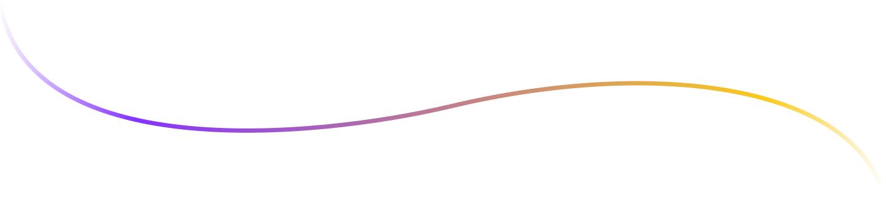
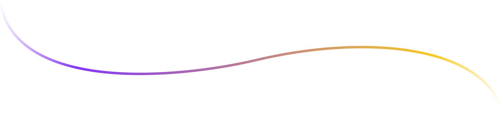
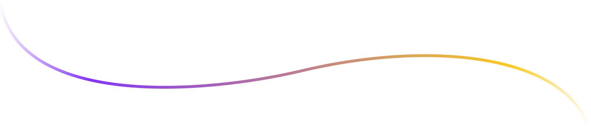

Here you will find amazing content from across the MultiversX, created by
people all over the world pushing the boundaries of creativity and
technology. Our spotlight shines a light on all these amazing creators and
projects that deserve our praise and recognition.

xSpotlight Features
Enhanced aggregation and curation of Web3 projects, through additional
featured & trending areas of our homepage.
The source of truth, through the verified badge applied to verified
NFTs, creators and collections.
Improved Explore section for easily finding specific NFTs, collections
and creators with advanced filters and sorting options.
Social dynamics, through asynchronous user connectivity, public profiles
linked to herotags, and customizable Web3 feed
Promotion of ecosystem partners, through integration of their existing
auctions and marketplace listings.
Be a Beacon of Light
You can now submit your project to be featured on xSpotlight.com!
Before you do, however, please take a close look at the selection
criteria below. We aim to identify and recognize the most impactful,
well-executed, and innovative projects from the MultiversX ecosystem.
Lighthouse Series
As we weather the present times, our goal is more important than ever:
be the beacon of light for the ecosystem, provide a guide during
uncertain times, offer helpful resources, sage advice, and unwavering
support. All with the aim of better navigating the waters, and
emerging more fortified on the other side.
Understanding NFTs and Web3 Communities
You have no doubt heard the term Web3 thrown around a lot lately, but
do you actually understand what it means? Or maybe you just need a
refresher on its principal building blocks. Have no fear, we got you
covered.

 
